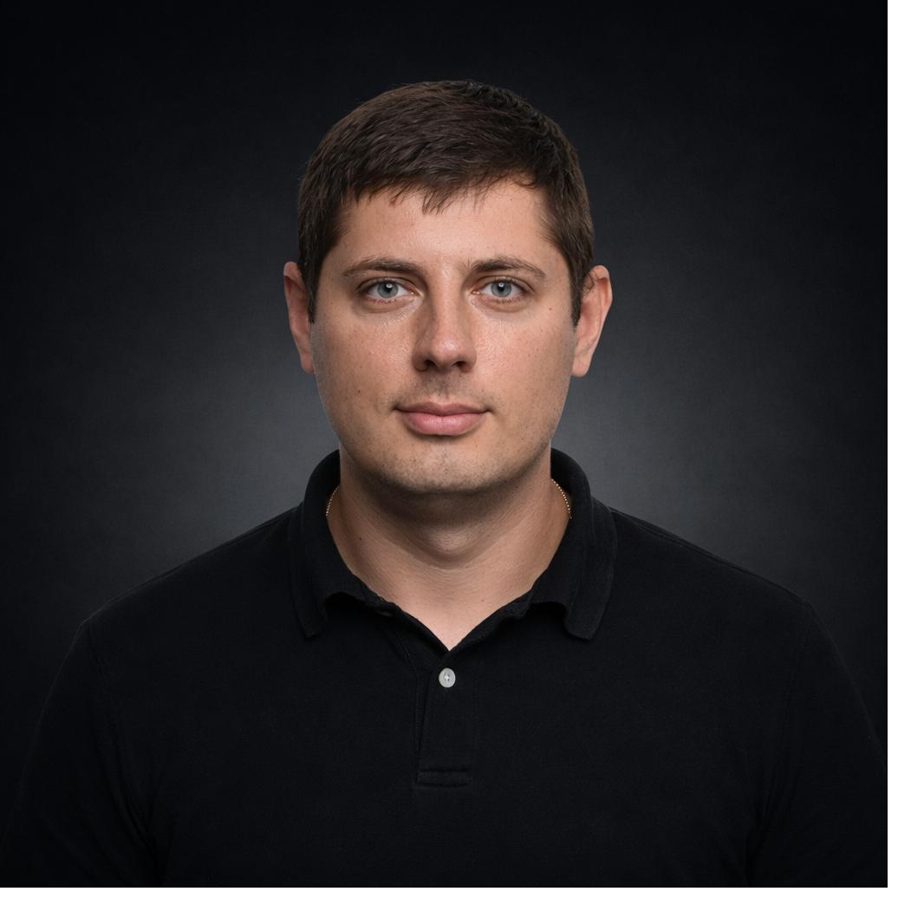

UI/UX Director and System Analyst with 20+ years building data-driven products. PhD researcher automating UX evaluation with computer vision and NLP. Based in Kyiv, shipping worldwide.

I lead UX strategy and system analysis for large-scale media monitoring and Big Data analytics platforms. My work sits at the intersection of human-centred design, product ownership, and applied data science.
Currently pursuing a PhD at SUTE (Kyiv) on systems modeling of heuristic user interface evaluation — building AI systems that can perform expert-level UX audits using computer vision and NLP. The research directly feeds my product work and vice versa.
I've shipped products adopted by 60,000+ users across healthcare, automotive, supply chain, and media analytics. I believe in measurable UX outcomes, ISO-grounded methodology, and teams that learn by doing.
Building a system that ingests UI screenshots, recognises interface patterns using computer vision, collects expert assessments as training data, and trains models to simulate expert-level UX quality judgments — grounded in Nielsen-Norman heuristics, ISO 9241, and WCAG 2.1.
An applied research tool for ISO 9241-based usability methodology. Part of the PhD dissertation work — bridging the standard's framework with practical evaluation tooling.
iso9241.orgTsesliuk, O. (2024). Inclusive assessment of web interfaces for users with disabilities: approaches and modeling. State University of Trade and Economics Repository.
I'm open to product leadership, UX direction, and AI product roles — especially where daily work and research can reinforce each other.
Available for consulting, speaking engagements, and academic collaboration on UX evaluation, accessibility, and AI-driven design quality.